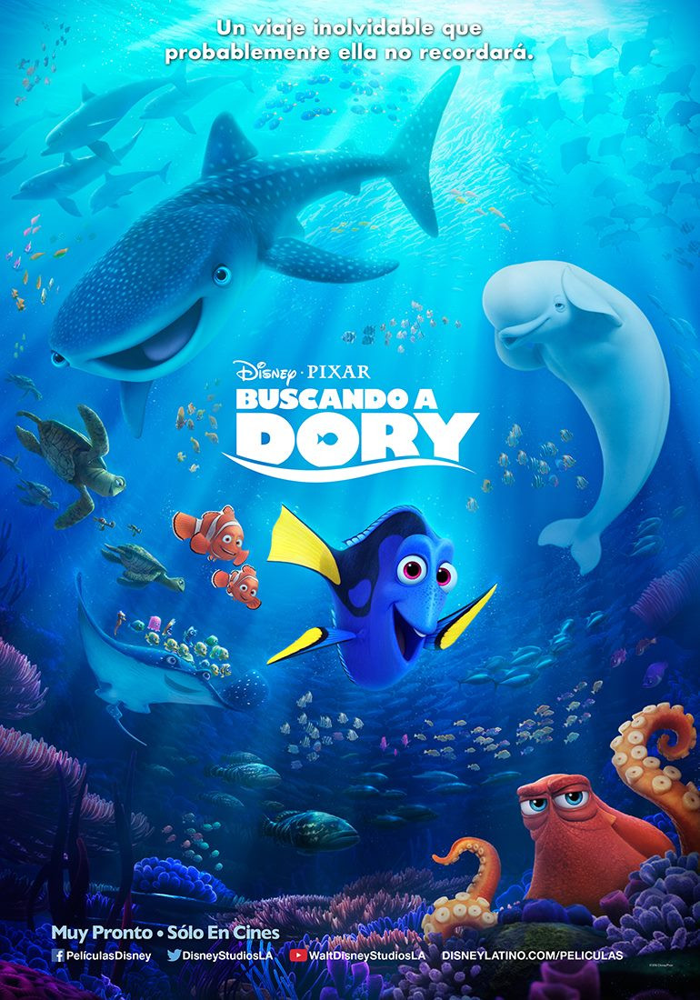

Buscando a Dory
|  | Andrew Stanton, Angus MacLane Estados Unidos 96 Minutos Reparto Ellen DeGeneres, Albert Brooks, Ed O'Neill, Ty Burrell, Diane Keaton |
Opciones disponibles
|
| En la nueva película de Disney-Pixar, Dory, la olvidadiza pez cirujano, vive felizmente en el arrecife junto con Nemo y Marlin. Pero, cuando de pronto recuerda que tiene una familia que la podría estar buscando, el trío comienza una épica aventura a través del océano para encontrarlos. Dory solicita la ayuda de Hank, un pulpo cascarrabias; Bailey, una beluga que está convencida de que su sonar biológico está estropeado, y Destiny, una tiburón ballena miope. Durante el viaje, Dory y sus amigos descubren la magia de sus defectos, de la amistad y de la familia. | ||